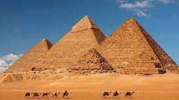
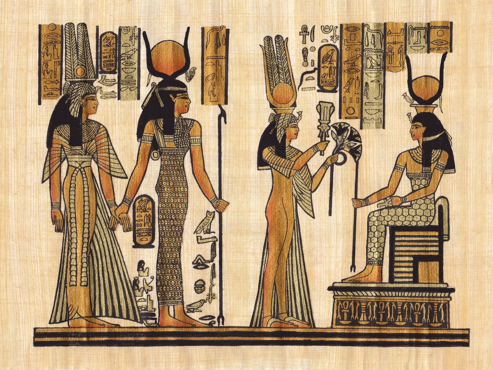
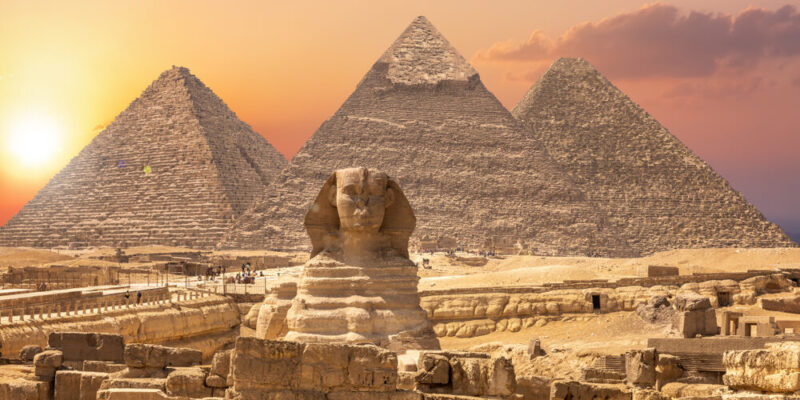

El antiguo Egipto o el Egipto antiguo fue una civilización de la Antigüedad, que se originó a lo largo del cauce medio y bajo del río Nilo, cuya historia abarca más de tres milenios. Se la considera una de las más importantes de la humanidad. El nombre original del país, especialmente durante el Imperio Antiguo, fue Kemet (Km.t), ‘tierra negra’, por el color del limo fertilizante que cubría durante la regular inundación anual el valle que se encuentra a orillas del río Nilo, en oposición a Deshret (dsr.t, ‘tierra roja’), por la arena del desierto del Sahara, que cubre la mayor parte del territorio egipcio.

El área del Antiguo Egipto ha variado a lo largo de los siglos, pero en general se acepta que abarcaba desde el delta del Nilo en el norte, hasta Elefantina, en la primera catarata del Nilo, en el sur. Además controlaba el desierto oriental, la línea costera del mar Rojo, la península del Sinaí, y un gran territorio occidental dominando los dispersos oasis. Históricamente, estaba formado por el Alto y el Bajo Egipto, al sur y al norte respectivamente, que precedieron a la creación de un estado unificado. En su período de mayor expansión controló los reinos amorreos de Palestina y el norte de Siria, llegando hasta el Éufrates medio, y las jefaturas nubias del Sudán, hasta el Jebel Barkal, en la cuarta catarata del Nilo. Ejerció una importante influencia cultural entre los pueblos vecinos, e incluso en regiones tan alejadas como Chipre, la costa de Anatolia y la península helénica.
La civilización egipcia se desarrolló durante más de 3500 años. Comenzó con la unificación de algunas ciudades del valle del Nilo, alrededor del año 3200 a. C., y convencionalmente se da por finalizada en el año 31 a. C., cuando el Imperio romano conquistó y absorbió el Egipto ptolemaico, el cual desapareció como Estado. Este acontecimiento no representó el primer período de dominación extranjera en Egipto, pero condujo a una transformación gradual en la vida política y religiosa del valle del Nilo, marcando el final del desarrollo independiente de su identidad cultural. Ésta, sin embargo, había comenzado a diluirse paulatinamente tras las conquistas de los persas (siglo VI a. C.) y los macedonios (siglo IV a. C.), especialmente durante el período de los Ptolomeos. Tras la expansión del cristianismo entre los egipcios, Justiniano I prohibió en 535 el culto a la diosa Isis en el templo de File, lo cual terminó con una religión vigente durante más de cuatro milenios. No obstante, el idioma egipcio —llamado copto— siguió utilizándose, escrito en un alfabeto derivado del griego, y los egipcios se identificaron plenamente con el cristianismo, en especial con la doctrina monofisita. Surgió entonces una literatura copta, de carácter cristiano, que recogía mitos, costumbres y creencias de la antigua religión tradicional. La desaparición del copto y su sustitución por el árabe, en el marco de la islamización del país después de su conquista, supuso el final definitivo de los últimos restos del Antiguo Egipto.

Egipto tiene una combinación única de características geográficas, situada en el África nororiental y confinada por Libia, Sudán y los mares Rojo y Mediterráneo. El río Nilo fue la clave para el éxito de la civilización egipcia, ya que este permitía el aprovechamiento de los recursos y ofrecía una significativa ventaja sobre otros oponentes: el limo fértil depositado a lo largo de los bancos del Nilo tras las inundaciones anuales significó para los egipcios el practicar una forma de agricultura menos laboriosa que en otras zonas, liberando a la población para dedicar más tiempo y recursos al desarrollo cultural, tecnológico y artístico.
La vida se ordenaba en torno al desarrollo de un sistema de escritura y de una literatura independientes, así como en un cuidadoso control estatal sobre los recursos naturales y humanos, caracterizado sobre todo por la irrigación de la fértil cuenca del Nilo y la explotación minera del valle y de las regiones desérticas circundantes, la organización de proyectos colectivos como las grandes obras públicas, el comercio con las regiones vecinas de África del este y central y con las del Mediterráneo oriental y, finalmente, por un poderío capaz de derrotar a cualquier enemigo, y que mantuvieron una hegemonía imperial y la dominación territorial de civilizaciones vecinas en diversos períodos. La motivación y la organización de estas actividades estaba encomendada a una burocracia de élite sociopolítica y económica, los escribas, bajo el control del Faraón, un personaje semidivino, perteneciente a una sucesión de dinastías, que garantizaba la cooperación y la unidad del pueblo egipcio en el contexto de un elaborado sistema de creencias religiosas.
Los muchos logros de los egipcios incluyen la extracción minera, la topografía y las técnicas de construcción que facilitaron el levantamiento de monumentales pirámides, templos y obeliscos, unos procedimientos matemáticos, una práctica médica eficaz, métodos de riego y técnicas de producción agrícola, las primeras naves conocidas, la tecnología del vidrio y de la fayenza, las nuevas formas de la literatura y el tratado de paz más antiguo conocido, firmado con los hititas. Egipto dejó un legado duradero, su arte y arquitectura fueron ampliamente copiados, y sus antigüedades se llevaron a los rincones más lejanos del mundo. Sus ruinas monumentales han inspirado la imaginación de los viajeros y escritores desde hace siglos. Un nuevo respeto por las antigüedades y excavaciones en la época moderna han llevado a la investigación científica de la civilización egipcia y a una mayor apreciación de su legado cultural.
